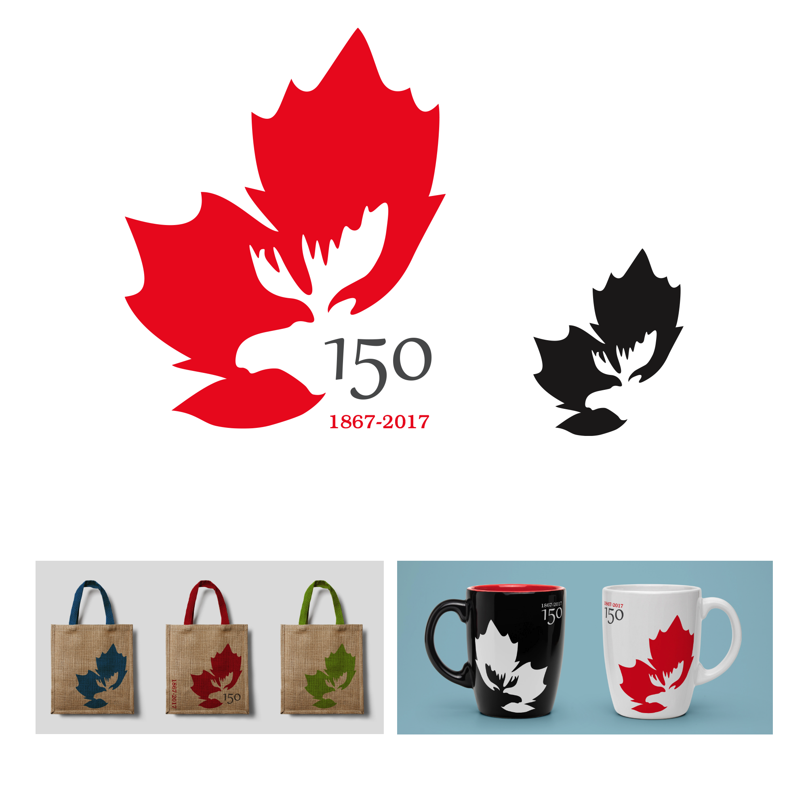

2014, digital (Illustrator), print
Canada 150 is a logo created for the celebration of Canada’s 150th anniversary. It combines two of the most well known Canadian symbols—the maple leaf and the moose—into a simple, organic shape. The oldstyle numerals point towards the (old) age of the country while assimilating itself into the logo through the type’s roundness. The typography clarifies the purpose of the logo, but is not necessary in order for the viewer to recognize what it is representing. The red as the main colour was an obvious choice, particularly since it references the canadian flag. The logo was meant to be flexible, both in colour and application.